Locații de nuntă în județul Gorj
- locații în director
- 21
- cu cazare în registrul SITUR
- 7
- medie ponderată Google
- 4,7 / 5
- evaluări Google
- 8.205
Cum alegi unde mergi la vizionare
Tismana, Polovragi și Novaci pot intra în discuție pentru cuplurile care vor să petreacă un weekend cu invitații. Dacă rezervați și camere, aflați dacă zona de servire a micului dejun rămâne liberă pentru pregătirea cununiei sau este folosită de ceilalți oaspeți.
La Casa din Salcâmi din Polovragi, un oaspete amintește parcarea în curtea pensiunii. Dacă vă imaginați o întâmpinare în același exterior, stați lângă poartă când stabiliți planul cu gazda. De ce spațiu are nevoie mașina care aduce decorul și pe unde intră mai târziu familia? O oprire în Novaci sau Tismana poate completa traseul de vizionări în altă zi.
Două adrese pentru o zi de vizionări
Pe hartă, între aceste două proprietăți sunt 4,3 km în linie dreaptă. Deschide indicațiile de drum din fișe ca să vezi traseul pe șosea înainte de a stabili a doua întâlnire.
- Conacul Olarilor · Str. Dispensarului, 217030 Baia de Fier
- Pensiunea Valea Măgurii - cazare Transalpina · str. Valea Magurii 10, 217030 Valea Măgurii
Explorează după localitate
- Apa Neagră o locație
- Arcani o locație
- Baia de Fier o locație
- Bălcești o locație
- Bumbești-Jiu o locație
- Cernădia o locație
- Dobrița o locație
- Novaci o locație
- Poienari o locație
- Polovragi 2 locații
- Scoarța o locație
- Stănești o locație
- Târgu Jiu 5 locații
- Tismana o locație
- Turcinești o locație
- Valea Măgurii o locație
Toate locațiile din județul Gorj
Ordinea ține cont de nota Google și de numărul evaluărilor. Cum calculăm ordinea
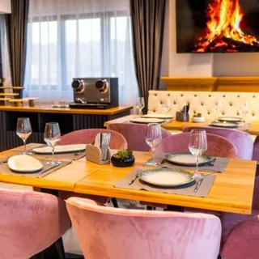
Fotografie a locației · Sursa fotografiei Târgu Jiu · Pensiune
Pensiunea Parâng
Pensiunea Parâng, Târgu Jiu. La Parâng, un vizitator a fost surprins că micul dejun se comanda dintr-o listă cu mai multe variante.
Aleea Bicaz 23, 210193 Târgu Jiu+40 758 757 757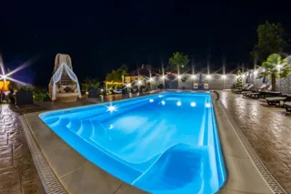
Fotografie a locației · Sursa fotografiei Valea Măgurii · Pensiune
Pensiunea Valea Măgurii - cazare Transalpina
Pensiunea Valea Măgurii - cazare Transalpina. Pentru o familie care se adună de seara, aceste activități se pot discuta separat de masa propriu-zisă.
str. Valea Magurii 10, 217030 Valea Măgurii+40 764 635 002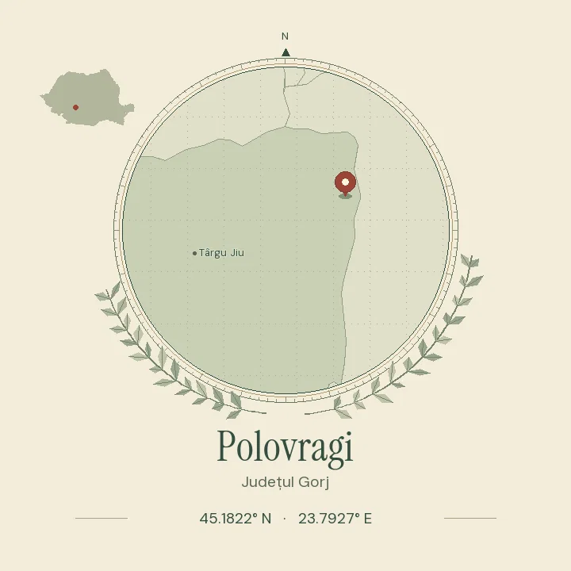
Hartă ilustrată Polovragi · Bed & Breakfast
CONACUL CATERINEI
Pentru un oaspete de la Conacul Caterinei, atuul șederii în Polovragi a fost liniștea, într-o escapadă între adulți.
Drumul Mânăstirii 13, 217365 Polovragi+40 740 187 131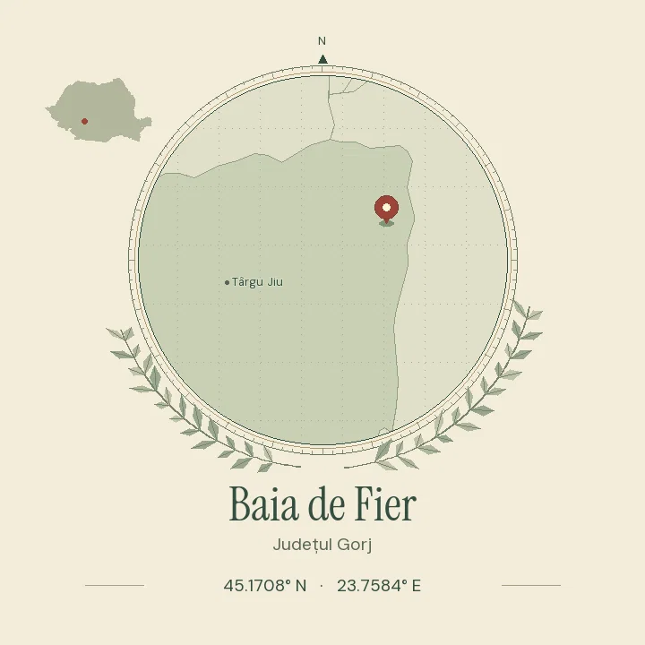
Hartă ilustrată Baia de Fier · Pensiune
Conacul Olarilor
Pensiune-conac la Baia de Fier cu alee de piatră și curte interioară folosită pentru ședințe foto de absolvenți; media 4,9 din 165 de evaluări.
Str. Dispensarului, 217030 Baia de Fier+40 799 909 999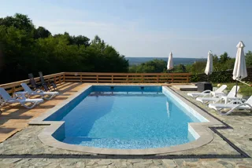
Fotografie a locației · Sursa fotografiei Scoarța · Pensiune
Pensiunea Iulia
Într-o relatare despre Pensiunea Iulia apar bucătăria bine echipată, grătarul și ceaunul, pe lângă curte și piscină.
Sat Beacu Mare 301, 217425 Scoarța+40 769 465 494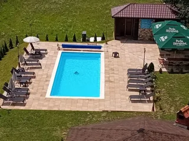
Fotografie a locației · Sursa fotografiei Polovragi · Pensiune
Casa din Salcâmi
Pensiune cu restaurant în Polovragi, lăudată pentru pâinea de casă și carnea la garniță. A găzduit o cununie și grupuri de 43 de persoane.
217365 Polovragi+40 740 273 590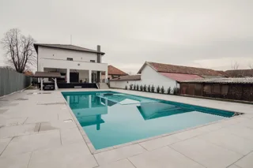
Fotografie a locației · Sursa fotografiei Arcani · Bed & Breakfast
Pensiunea "MAGNESIA" (4 margarete)
Pensiunea "MAGNESIA" (4 margarete), Arcani. Pentru o reuniune la Arcani, decupați din programul petrecerii un interval separat pentru înot.
JUDETUL GORJ SAT SANATESTI NR. 139A, 217025 Arcani+40 723 504 942
Fotografie a locației · Sursa fotografiei Târgu Jiu · Pensiune
Pensiunea Casa Vera
Pensiunea Casa Vera. La Casa Vera din Târgu Jiu contează la ce se referă fiecare cifră: terasa are 50 de locuri, în timp ce restaurantului îi sunt atribuite 60.
Strada Vasile Alecsandri nr.51-53, 210201 Târgu Jiu+40 253 212 200
Fotografie a locației · Sursa fotografiei Târgu Jiu · Cazare
Hotel Anna
Hotel cu restaurant și terasă pe bulevardul Ecaterina Teodoroiu din Târgu Jiu, nota 4,7 din 1.570 de evaluări. Nunțile apar pe site.
Bulevardul Ecaterina Teodoroiu 17, 210118 Târgu Jiu+40 253 206 333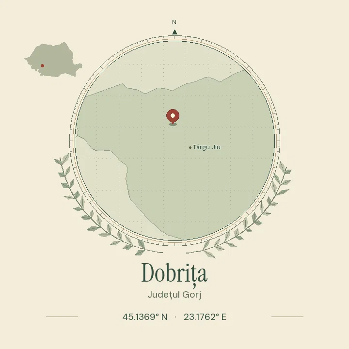
Hartă ilustrată Dobrița · Cazare
Conac Dobrita - “La Colonelul”
Conac Dobrita - “La Colonelul”. Un oaspete venit pentru un weekend la conacul din Dobrița își amintește cât de repede au încălzit sobele încăperile.
DJ672D 323, 217393 Dobrița+40 770 754 020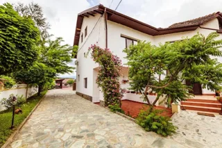
Fotografie a locației · Sursa fotografiei Turcinești · Pensiune de familie
Pensiunea IRIS
Pensiunea IRIS, Turcineşti. Pentru grup, cereți o singură confirmare cu spațiile incluse și persoana care răspunde de fiecare.
409 DJ664, 217531 Turcineşti+40 763 686 595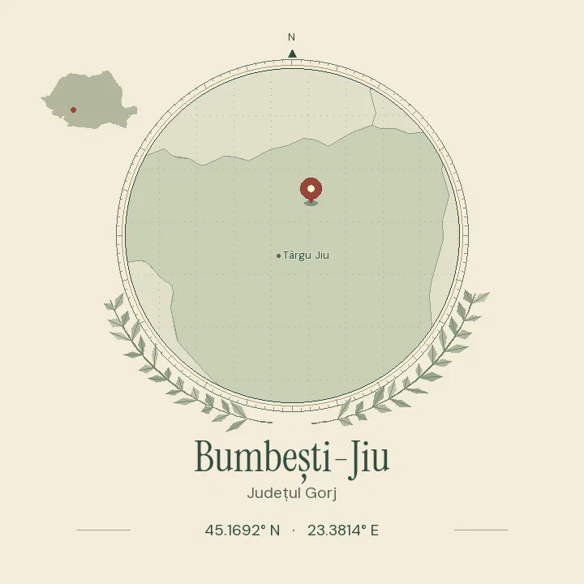
Hartă ilustrată Bumbești-Jiu · Cazare în regim hotelier
My Way
My Way, Bumbești-Jiu. Pentru o cununie, perspectiva care contează este cea din dreptul scaunelor, nu doar cea văzută în picioare de un turist.
Strada Parângului nr.3, 215100 Bumbești-Jiu+40 767 462 095
Hartă ilustrată Târgu Jiu · Pensiune
Pensiunea Giovani
Pensiunea Giovani, Târgu Jiu. La Giovani, un părinte a remarcat un lucru pe care descrierile de cazare îl omit ușor.
Strada Mesteacanului 55A, 210138 Târgu Jiu+40 728 320 582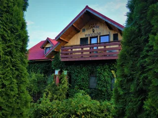
Fotografie a locației · Sursa fotografiei Cernădia · Pensiune
Pensiunea Conacul Bunicilor 4 stele
Dacă nunta aduce rudele la Cernădia încă de vineri, aflați ce activități se pot folosi la sosire și care necesită programare.
Str. Principală nr 14 Sat Cernădia, comuna Baia de Fier, Jud Gorj, 217031 Cernădia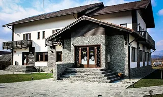
Fotografie a locației · Sursa fotografiei Apa Neagră · Pensiune
Pensiunea Câmpia Soarelui, Gorj
La Câmpia Soarelui, un vizitator a apreciat locul din Apa Neagră, dar a avut alte așteptări în privința platoului cu miel și bulz comandat la masă.
Sat Apa Neagră, nr. 25, 217326 Apa Neagră+40 768 741 216
Fotografie a locației · Sursa fotografiei Târgu Jiu · Pensiune
Pensiunea Casa Cartianu
O persoană care rezervase o masă la Casa Cartianu povestește că restaurantul se afla între două evenimente și că servirea a durat mai mult decât se aștepta.
DJ664 282, 217531 Târgu Jiu+40 756 363 454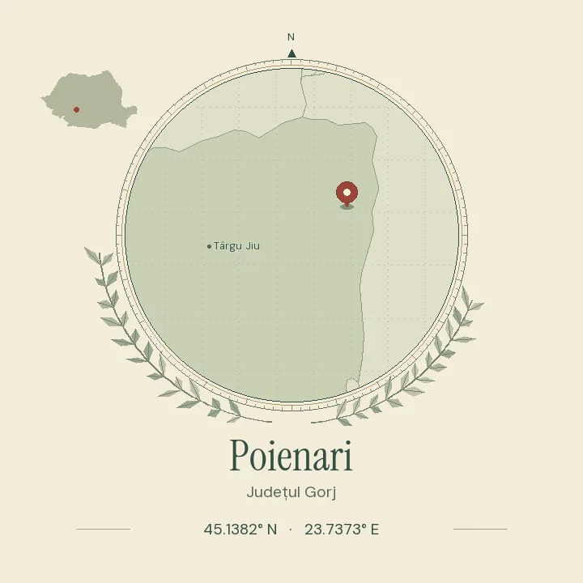
Hartă ilustrată Poienari · Hotel
Conacul lui Patrick
Căsuțe cu iaz, piscină și căsuță în copac în satul Poienari, Gorj. Oaspeții laudă curățenia; noaptea se aud broaștele de pe iaz.
Str. Principala, Nr. 46, Sat Poienari, Com. Bumbești-Pitic, jud. Gorj, 217112 Poienari+40 725 461 718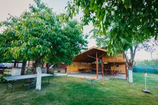
Fotografie a locației · Sursa fotografiei Tismana · Unitate de cazare rurală
Agro-pensiunea "Plaiul Castanilor"
Pensiune la Tismana cu terasă de vară de 40 de locuri și o curte mare cu tiroliană și trambulină; nota 4,4 din 295 de evaluări.
136, Calea Gornovita nr, 217495 Tismana+40 763 340 991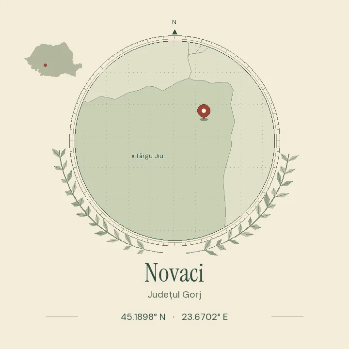
Hartă ilustrată Novaci · Hotel
CONACUL DE SUB MUNTE
Cabană de închiriat în Novaci, cu grătare, piscină și foișor cu șemineu. Un grup de 25 de persoane a stat aici; vecinii impun liniște după 22.00.
Strada Gilortului 108, 215300 Novaci+40 769 264 614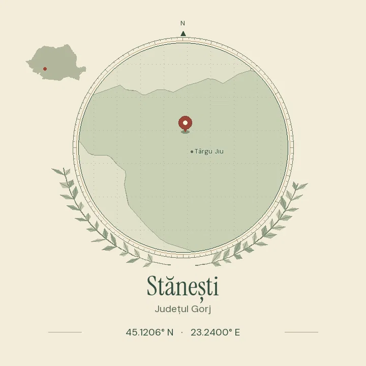
Hartă ilustrată Stănești · Bed & Breakfast
PENSIUNEA LA LIVADA
PENSIUNEA LA LIVADA, Stăneşti. Un sejur la Livada este descris de un vizitator ca potrivit pentru cei care își pregătesc singuri mesele.
Strada Linia Mare NR 26, 217455 Stăneşti+40 740 021 200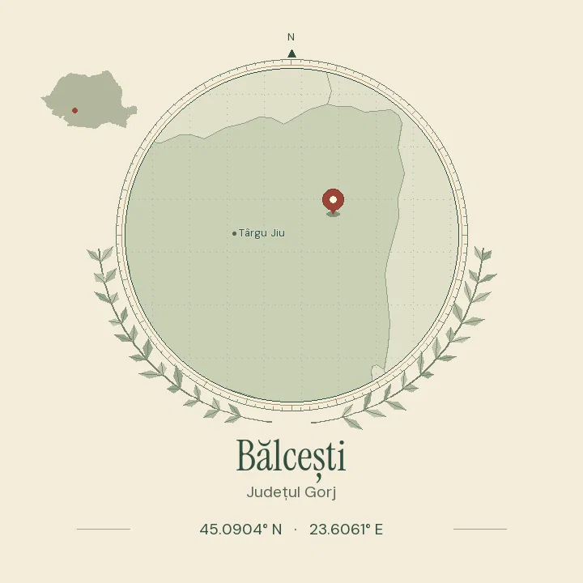
Hartă ilustrată Bălcești · Pensiune
Conacul Anei
Pensiune la Bălcești, Gorj, fără recenzii sau facilități publice. Întrebările de pus proprietarului înainte să o iei în calcul pentru un eveniment.
Bălcești , nr 23, 217075 Gorj
Întrebări despre locațiile din județul Gorj
Unde pot dormi invitații în județul Gorj?
În registrul de cazare SITUR găsim Pensiunea Parâng (26 de locuri de cazare), Conacul Olarilor (10 locuri de cazare), Casa din Salcâmi (16 locuri de cazare). Verifică ce camere sunt libere pentru noaptea evenimentului.
Ce proprietăți din județul Gorj au grădină sau terasă?
Pensiunea Parâng (terasă); Pensiunea Iulia (grădină); Pensiunea "MAGNESIA" (4 margarete) (foișor). Cere administratorului condițiile de folosire pentru o petrecere privată.
Care locație din județul Gorj are cele mai multe evaluări Google?
Pensiunea Casa Vera are 1.755 de evaluări în profilul Google folosit la documentare. Evaluările acoperă și alte experiențe la proprietate, inclusiv vizitele fără eveniment.
Unde apare o intrare accesibilă în județul Gorj?
Profilurile Google indică o intrare accesibilă la Pensiunea Casa Vera, Hotel Anna. Pentru o cununie în exterior, cere detalii despre traseul dintre intrare și zona cu scaune.